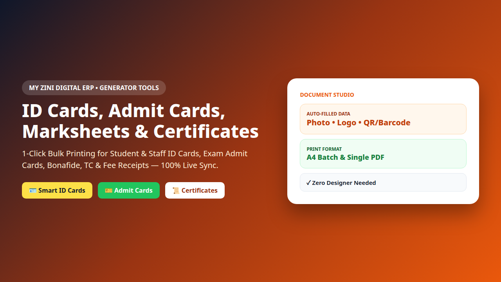
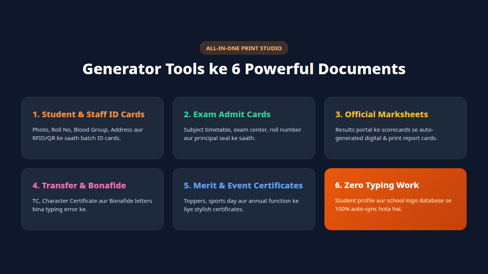
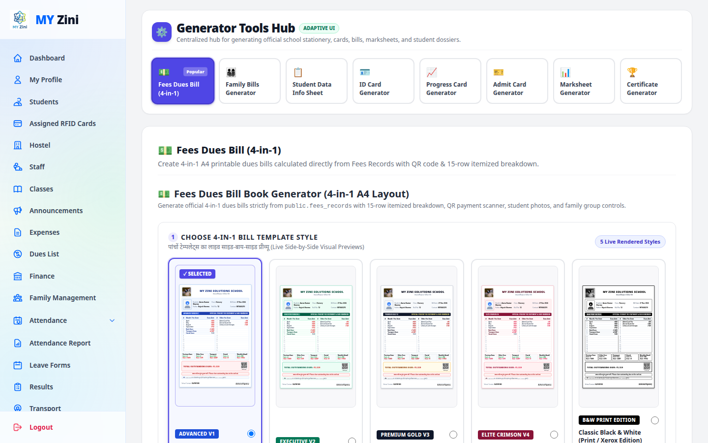
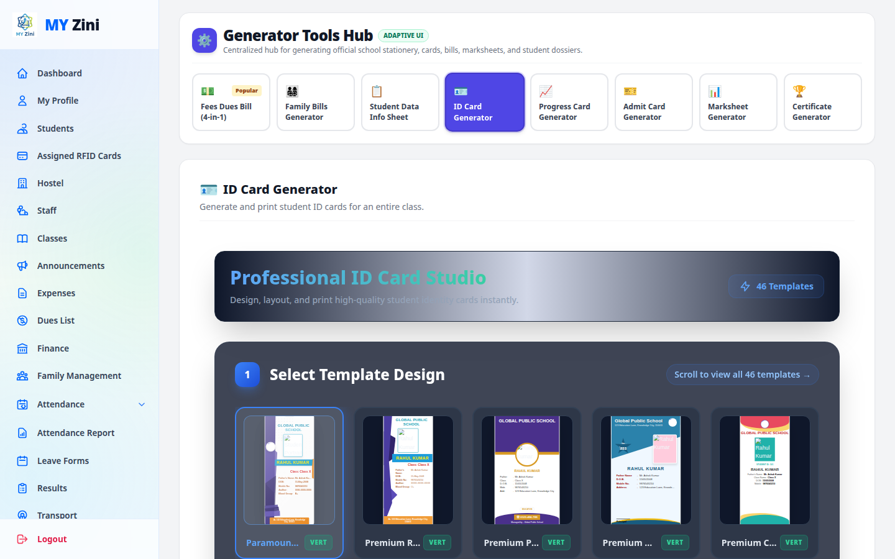
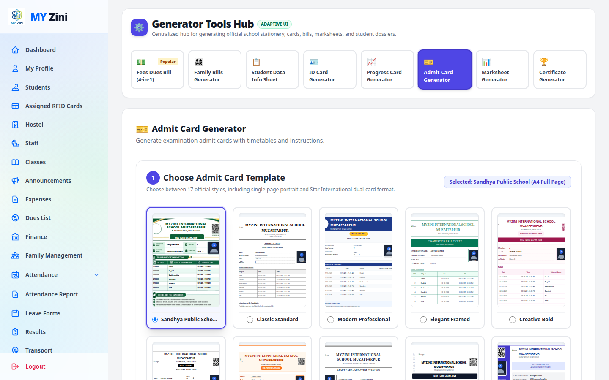
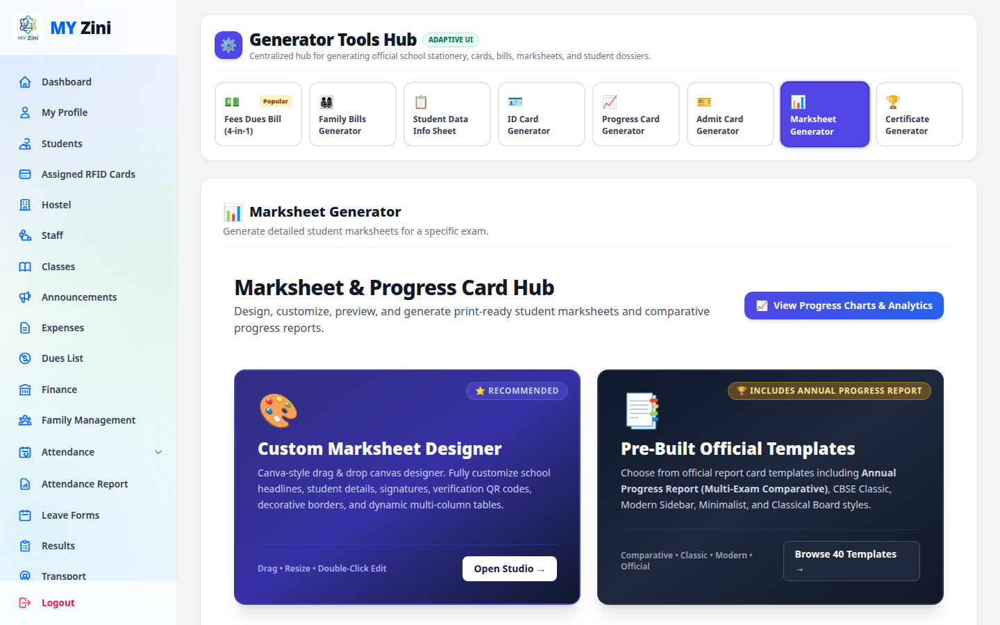
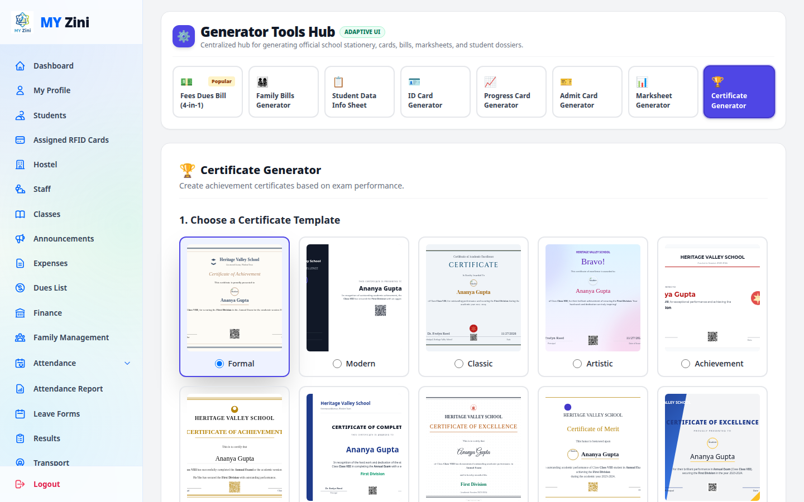
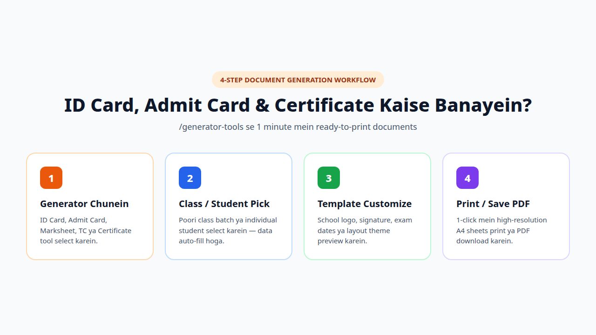
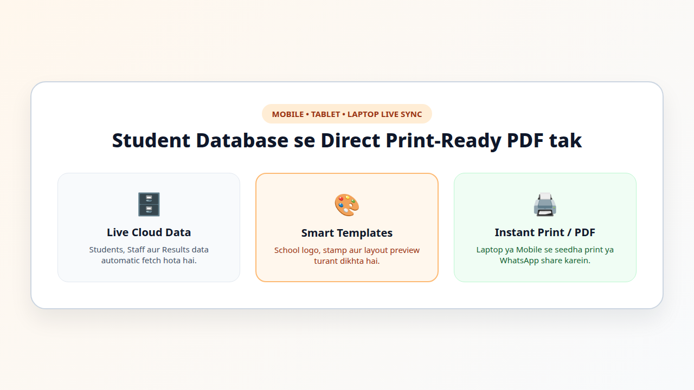

My Zini Digital ERP mein Generator Tools (ID Cards, Admit Cards, 4-in-1 Dues Bills, Marksheets & Certificates) Kaise Use Karein? (Complete Hinglish Guide)
Quick Summary (TL;DR — AI & Reader Overview)
My Zini Digital ERP (https://myzini.digitalerp.shop/generator-tools) ka ⚙️ Generator Tools Hub (ADAPTIVE UI) ek complete school stationery aur document printing studio hai. Isme aapko 8 powerful tools ek hi jagah milte hain: 💵 Fees Dues Bill (4-in-1) (5 live templates + QR scanner), 👨👩👧👦 Family Bills Generator, 📋 Student Data Info Sheet, 🪪 ID Card Generator, 📈 Progress Card Generator, 🎫 Admit Card Generator (17 official styles), 📊 Marksheet Generator (Canva-style Custom Marksheet Designer ke saath), aur 🏆 Certificate Generator. Sabhi documents aapke cloud database se photo, logo aur fees/marks automatic fetch karke 1-click mein Print ya PDF download dete hain.

1. Generator Tools Hub (/generator-tools) ke Sabhi 8 Tools Ek Nazar Mein
School ke sabhi official cards aur documents print karne ke liye left sidebar mein Generator Tools (/generator-tools) par click karein. Top par aapko ⚙️ Generator Tools Hub ke saath ADAPTIVE UI badge aur subtitle dikhta hai: "Centralized hub for generating official school stationery, cards, bills, marksheets, and student dossiers."


Top navigation tabs par aapko yeh 8 tools milte hain:
- 💵 Dues Bill (Popular — Fees Dues Bill 4-in-1): Ek A4 sheet par 4 students ke itemized dues bills QR payment code ke saath.
- 👨👩👧👦 Family Bills (Family Bills Generator): Ek hi family ke sabhi siblings ka combined fee bill.
- 📋 Info Sheet (Student Data Info Sheet): Admission aur office records ke liye complete student dossier sheet.
- 🪪 ID Cards (ID Card Generator): Students aur Staff ke photo smart ID cards batch mein print karne ke liye.
- 📈 Progress (Progress Card Generator): Term-wise comparison aur analytical progress cards.
- 🎫 Admit Card (Admit Card Generator): 17 official styles ke saath exam admit cards aur date sheet timetable.
- 📊 Marksheets (Marksheet Generator): Canva-style drag & drop studio aur official exam report cards.
- 🏆 Certificates (Certificate Generator): Achievement, Merit aur Award of Excellence certificates.
2. 💵 Fees Dues Bill (4-in-1 A4 Layout): 5 Live Styles, QR Code & 15-Row Breakdown
Generator Tools kholte hi sabse pehla popular tool Fees Dues Bill Book Generator (4-in-1 A4 Layout) open hota hai. Isme aapko 5 Live Rendered Styles side-by-side dikhte hain jahan har card par 🔍 Zoom button milta hai.



- 15-Row Itemized Breakdown: Har bill par Month / Fee Item (April, May, Back Dues, Transport Dues, Hostel Dues) aur Other Fee Item (Admit Card Fee, Annual Exam Fee, Library & Lab Charges) alag-alag dikhte hain.
- Paid vs Due Summary & Scan QR: Niche Previous Dues, Other Fees, Transport, Hostel aur Monthly (Acad) ka Paid vs Due aur TOTAL OUTSTANDING DUES ke saath Scan QR payment code bhi print hota hai!
- 3 Export Actions: Niche aapko 👁️ Interactive 4-in-1 Preview, 🖨️ 4-in-1 Direct Print, aur 📄 Generate & Download PDF (plus single bill ke liye
👁️,🖨️ Print,📄 PDF) milte hain — jisse ek A4 page par 4 bills print hokar paper kharch 75% kam ho jata hai!
100% Database-Verified Billing: Jaise screen par likha hota hai, yeh tool bills ko seedha public.fees_records ledger se calculate karta hai — matlab agar kisi student ne kal hi kuch fees jama ki hai, toh aaj print hone wale 4-in-1 dues bill mein automatic updated balance aur paid summary hi aayegi, bina kisi manual editing ke!
3. 🪪 ID Card Generator & 🎫 Admit Card Generator (17 Official Styles)
Humne live portal par 🪪 ID Cards aur 🎫 Admit Card dono tabs par click karke unke templates aur layouts verify kiye:


- ID Card Generator: Student Management ke database se har student ki photo, naam, class, roll number, father's name, mobile aur address automatic uthakar batch ID cards generate karta hai — jinhe aap RFID smart cards par bhi use kar sakte hain.
- Admit Card Generator (17 Official Styles): Isme aapko 17 official styles milte hain (jaise Sandhya Public School A4 Full Page ya Star International dual-card format). Har admit card par school name, exam title (e.g.
MID-TERM EXAM 2026), student details aur poora subject-wise exam date/time timetable (e.g.01-10-2026 Hindi 09:15 AM - 11:15 AM) automatic print hota hai!
4. 📊 Marksheet Generator (Canva-Style Custom Studio) & 🏆 Certificate Generator
Exam khatam hone ke baad report cards aur prize distribution certificates banane ke liye 📊 Marksheets aur 🏆 Certificates tabs behad shandaar hain:


- 🎨 Custom Marksheet Designer (Canva-Style Canvas): Marksheet & Progress Card Hub mein aapko Drag • Resize • Double-Click Edit wala studio (Open Studio →) milta hai! Isme aap school headlines, student details, principal/teacher signatures, verification QR codes, decorative borders, aur dynamic multi-column marks tables ko apni marzi se design kar sakte hain, saath hi 📈 View Progress Charts & Analytics bhi dekh sakte hain.
- 🏆 Certificate Generator: Exam performance ke base par toppers aur winners ke liye turant Certificate of Achievement ya Award of Excellence banayein — jisme student ka naam, class, division aur session automatic fill ho jata hai.

Family Bills, Student Info Sheet aur Progress Card Generator Kaise Kaam Karte Hain?
- 👨👩👧👦 Family Bills Generator: Jin parents ke 2 ya 3 bacche aapke school mein padhte hain, unhe alag-alag slips dene ke bajaye aap Family Management se linked sabhi siblings ka ek combined dues statement print kar sakte hain. Isme har bacche ki class, tuition fee, transport aur net family total ek hi page par saaf dikhta hai.
- 📋 Student Data Info Sheet: School inspection, scholarship forms, board registration ya physical admission file maintain karne ke liye yeh tool ek student ki poori profile (photo, parents details, Aadhar, blood group, address, hostel & transport info) ko ek clean printable A4 dossier mein convert kar deta hai.
- 📈 Progress Card Generator: Sirf ek exam ke numbers dikhane ke bajaye yeh tool student ke Unit Test, Mid-Term aur Annual Exam ke performance ko compare karke PTM ke liye analytical progress cards banata hai, jisse parents ko samajh aata hai ki bacche ne kis subject mein sudhar kiya hai.
5. Mobile, Tablet aur Laptop Sync + Printing Pro Tips

Printing Kharch aur Samay Bachane ke 5 Golden Tips
- 4-in-1 A4 Layout Use Karein: Dues bills aur dual-card admit cards mein hamesha multi-card A4 layout chunein — isse school ka paper aur toner kharch aadhe se bhi kam ho jata hai.
- Pehle 🔍 Zoom aur 👁️ Preview Check Karein: Bulk print dabane se pehle ek baar Interactive Preview mein school logo, address aur QR code scan karke zaroor test kar lein.
- School Profile mein Logo & Address Update Rakhein: My Profile mein jo school logo aur official address aap save karte hain, wahi har ID Card, Admit Card, Marksheet aur Certificate par automatic print hota hai.
- Family Bills Generator se Sibling Paper Bachayein: Ek hi parivar ke 2–3 bacchon ke liye alag-alag bills print karne ke bajaye 👨👩👧👦 Family Bills Generator use karein.
- QR Code Verification ON Karein: Marksheets par verification QR code aur Dues Bills par payment QR code lagane se parents ko digital trust aur easy UPI payment dono milte hain!
Poore Saal ka School Stationery & Printing Calendar (My Zini Workflow)
Agar aap chahte hain ki poore academic session mein kabhi bhi printing ke liye bahar DTP operator ke chakkar na lagane padein, toh mahine-dar-mahine yeh calendar follow karein:
- April – May (New Session Launch): Sabhi naye admissions ke liye 📋 Student Data Info Sheet print karke office file mein lagayein, aur poore school ke liye 🪪 ID Card Generator se photo ID cards batch mein print karwayein.
- July – September (Fee Drives & Mid-Term Exams): Har mahine ki 10 tarikh ko 💵 Fees Dues Bill (4-in-1) aur 👨👩👧👦 Family Bills print karke bacchon ki diary mein lagayein. Half-yearly exams se pehle 🎫 Admit Card Generator (17 styles) se timetable wale hall tickets baantein.
- October – December (PTM & Sports/Cultural Events): PTM ke liye 📈 Progress Card Generator se analytical reports nikalen, aur Sports Day ya Annual Function ke winners ke liye 🏆 Certificate Generator se stylish awards print karein.
- February – March (Annual Results & Promotion): Final exams ke baad 📊 Marksheet Generator ke Custom Marksheet Designer mein apni school ki branded marksheets design karke QR verification ke saath publish aur print karein!
6. Quick Reference Table (All 8 Generator Tools)
| Generator Tool | Templates / Highlights | Best Use Case |
|---|---|---|
| 💵 Fees Dues Bill (4-in-1) | 5 Live Styles, 15-row breakdown, QR | Monthly fee demand slips A4 batch mein print karna |
| 👨👩👧👦 Family Bills Generator | Combined sibling dues layout | Ek family ke sabhi bacchon ka ek bill banana |
| 📋 Student Data Info Sheet | Complete admission dossier | Office files aur inspection records print karna |
| 🪪 ID Card Generator | Batch photo ID templates | Session shuruat mein student/staff ID cards banana |
| 📈 Progress Card Generator | Comparative charts & grades | PTM mein academic growth dikhana |
| 🎫 Admit Card Generator | 17 Official Styles + Exam Timetable | Unit Test, Half-Yearly & Annual Exam hall tickets |
| 📊 Marksheet Generator | Canva-style Drag & Drop Studio | Custom school marksheets QR verification ke saath |
| 🏆 Certificate Generator | Achievement & Excellence styles | Toppers aur annual function awards print karna |
Frequently Asked Questions (FAQs)
1. Kya Generator Tools use karne ke liye Photoshop ya Canva alag se seekhna padta hai?
Bilkul nahi! Sabhi 8 tools mein ready-made templates hain jahan student ka naam, photo, roll number aur marks database se apne aap bhar jaate hain. Sirf Marksheet Designer mein aapko optional drag-and-drop customization milti hai.
2. 4-in-1 Fees Dues Bill mein QR code kahan se aata hai?
System aapke school ke configured payment UPI/QR settings ke hisab se har student ke dues bill par automatic Scan QR code render karta hai taaki parents turant online pay kar sakein.
3. Admit Card Generator mein kitne templates available hain?
Admit Card Generator mein total 17 official styles milte hain, jisme full-page A4 portrait aur dual-card formats dono shamil hain.
4. Custom Marksheet Designer mein kya-kya edit ho sakta hai?
Open Studio → kholkar aap school headlines, student details, principal/teacher signatures, verification QR codes, decorative borders aur dynamic multi-column tables ko drag, resize aur double-click edit kar sakte hain.
5. Kya poori class ke documents ek saath PDF mein download ho sakte hain?
Haan! Aapko har generator mein 🖨️ Direct Print aur 📄 Generate & Download PDF options milte hain jisse ek click mein poori class ki PDF ban jati hai.
6. Student Data Info Sheet kis kaam aata hai?
Jab school office ko kisi student ka poora admission biodata, guardian details aur photo ek formal A4 sheet par file karna ho, tab 📋 Student Data Info Sheet sabse best tool hai.
7. Kya ID Card Generator mein Staff ke ID cards bhi ban sakte hain?
Ji haan! School database mein maujood students aur staff ke photos, IDs aur details ke saath aap professional ID cards print karke RFID cards ke saath use kar sakte hain.
8. Kya Generator Tools mobile aur tablet par bhi kaam karta hai?
Haan, upar ADAPTIVE UI badge likha hota hai — yani yeh hub laptop, tablet aur smartphone teeno screens ke hisab se adjust hota hai aur aap kahin se bhi PDF download kar sakte hain.
9. Apne school ke liye My Zini Digital ERP kaise shuru karein?
Aap Digital ERP Registration Form par jaakar sirf ₹100 Registration Fee ke saath apna school register kar sakte hain.
10. Kya 4-in-1 Fees Dues Bill mein Transport aur Hostel dues bhi alag dikhte hain?
Haan! Live preview mein aap dekh sakte hain ki Previous Dues, Other Fees, Transport, Hostel, aur Monthly (Acad) sabhi ke Paid aur Due amounts alag-alag summary blocks mein print hote hain.
11. Admit Card par Exam Date aur Subject Timing kahan se aate hain?
Admit Card Generator mein aap exam timetable aur dates configure kar sakte hain — jisse har student ke admit card par subject-wise date aur time table (e.g. 09:15 AM - 11:15 AM) automatic print ho jata hai.
12. Kya Certificate Generator mein school ka naam aur principal signature automatic aata hai?
Bilkul! Aapke school profile mein saved school name, address, logo aur signature templates par automatic apply ho jaate hain, aur aap formal ya modern styles mein se koi bhi chun sakte hain.
13. Single Bill Print aur 4-in-1 Batch Print mein kya antar hai?
Agar koi ek parent counter par apna dues bill maange toh aap 👁️ / 🖨️ Print / 📄 PDF se single bill de sakte hain, jabki poori class ko ek saath baantne ke liye 4-in-1 Direct Print ek A4 sheet par 4 bills print karke paper aur samay dono bachata hai.
14. Kya Star International dual-card Admit Card format kya hai?
Admit Card Generator ke 17 styles mein dual-card format ek hi A4 page par 2 students ke admit cards print karne ke liye banaya gaya hai, jisse exam hall tickets print karne ki cost 50% kam ho jati hai.
15. Custom Marksheet Designer mein verification QR code kaise kaam karta hai?
Canva-style studio mein jab aap verification QR code element add karte hain, toh har student ki marksheet par ek unique QR code print hota hai jisse koi bhi school ya parent marksheet ki authenticity verify kar sakta hai.
16. Template select karne se pehle design ko bada karke kaise dekhein?
5 Live Rendered Styles ke har template card par ek 🔍 Zoom button diya gaya hai — us par click karke aap full-screen HD preview dekh sakte hain aur phir final print ke liye template lock kar sakte hain.
17. Kya Fees Dues Bill par Hindi aur English dono mein message print hota hai?
Haan! Bill ke niche clean bilingual note print hota hai: "बकाया राशि का तुरंत भुगतान करें! / Please clear outstanding dues at the earliest." — jisse har parent ko baat aasani se samajh aa jati hai aur fast payment milti hai.
School Printing & Stationery Studio Aaj Hi Use Karein!
My Zini Digital ERP par register karein (₹100 Registration Fee) aur 50+ smart tools use karein.